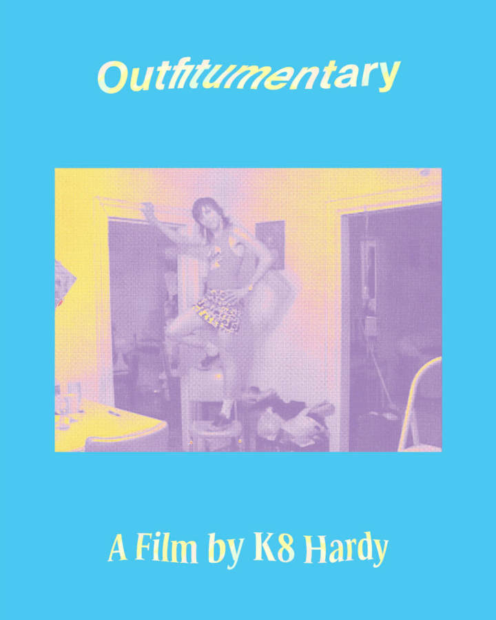

K8 Hardy: Outfitumentary (2016)
K8 Hardy, Outfitumentary, 2016
Friday, February 13, 7 – 9 pm
Join us this Friday for a free screening of K8 Hardy’s feature length film Outfitumentary (2016)
In 2001, artist and filmmaker K8 Hardy set out to document her daily outfits on video. Over an eleven year period, until the camera broke, she captured these outfits and outfitting on a fairly consistent, if not daily basis. She used the same shitty, mini DV camera and filmed in ever changing living spaces and art studios in New York. What emerged is a record of the way a young, lesbian feminist dressed and styled in her “coming of age” and an examination of coded fashion statements.
The screening is free and open to the public
Refreshments and popcorn provided
The film’s run time is 1 hour and 22 minutes
The screening will begin shortly after 7 pm